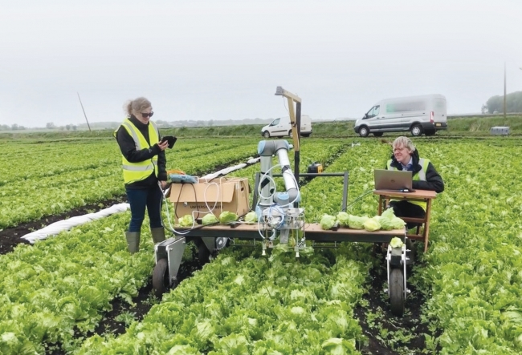

서비스 소개
빅데이터 기반 인공지능으로 청년 농부들의 자립을 돕습니다.

청년 농부들이 재배할 작물을 선택할 때 참고할 수 있는 정확한 수익 예측 정보를 제공합니다.
재배 지역과 농지 정보를 입력하면 기후와 재배 조건을 분석해 적합한 작물을 추천하고, 작물별 예상 생산량과 판매 가격, 생산비를 바탕으로 예상 수익을 계산합니다.
작물 수익 예측 기능
-
재배 환경에 맞는 작물 추천
재배 지역과 농지 정보를 입력하면 기후와 재배 조건을 분석해 적합한 작물을 추천합니다.
-
작물별 예상 수익 비교
작물별 예상 생산량과 판매 가격, 생산비를 바탕으로 예상 수익을 계산하고 비교합니다.
-
농산물 가격 동향 확인
농산물의 과거 가격 변화와 최근 시세를 확인해 재배할 작물을 선택하고 출하 계획을 세우는 데 도움을 줍니다.
이용 방법
- 재배 지역과 농지 면적 등 재배 정보를 입력합니다.
- 추천 작물과 작물별 예상 수익을 확인하고 비교합니다.
- 재배 환경과 예상 수익을 고려해 작물을 선택하고 영농 계획을 세웁니다.